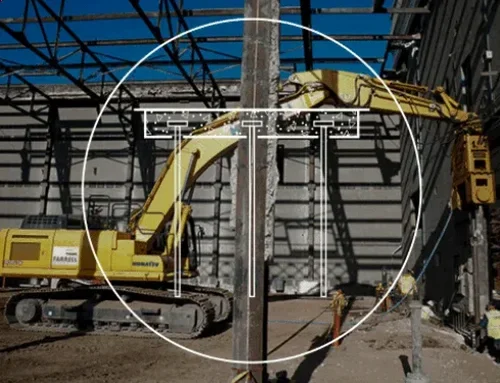

Ein zwölfstöckiges Bürogebäude am Bremer Hauptbahnhof, dessen Baugrube bis in sechs Meter Tiefe reicht, stellte das Planungsteam vor eine klassische Frage: Trägt der Pfahl überwiegend über Mantelreibung oder stützt er sich auf den Spitzendruck im darunterliegenden Sand? Die Antwort darauf liefert eine detaillierte Pfahlanalyse, die in Bremen aufgrund der mächtigen, weichen Kleischichten der Marsch besonders sorgfältig ausgeführt werden muss. In solchen Fällen kombinieren wir die statische Pfahlprobebelastung mit einer Baugrunduntersuchung durch Sondierungen, um die Scherparameter entlang des Pfahlschafts verlässlich zu bestimmen. Die Ergebnisse entscheiden letztlich über die Wahl des Pfahltyps und die wirtschaftliche Bemessung der Gründungsebene unterhalb des Grundwasserspiegels, der in Bremen oft nur knapp unter der Geländeoberkante ansteht.

Im weichen Marschboden Bremens dominiert die Mantelreibung in den oberen bindigen Schichten, während der Spitzendruck im Sand erst ab zehn Metern Tiefe voll wirkt.